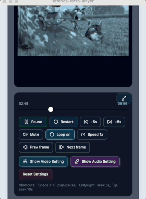

Pixi.js Shader Preview
Tetorica Retro Player
Images, videos, and screen capture can all be pushed through the same retro filter pipeline. The demo focuses on fast previewing, palette experiments, monochrome tints, CRT-style finishing, and a simple maximize flow for checking the final look.

What You Can Try In The Demo
Start with a photo, a clip, or a captured app window, then move between PC-98 style color limits, monochrome terminal looks, and more stylized low-resolution presets. Playback controls stay available for video, while still images use the exact same shader pipeline.